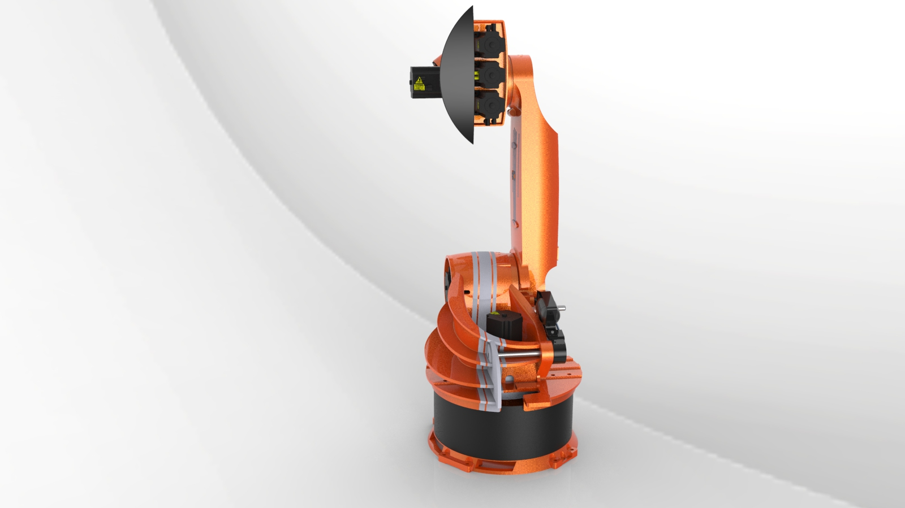
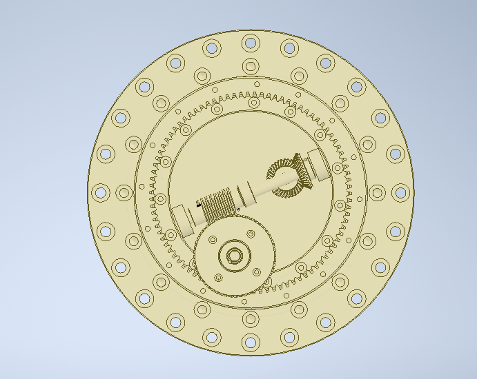
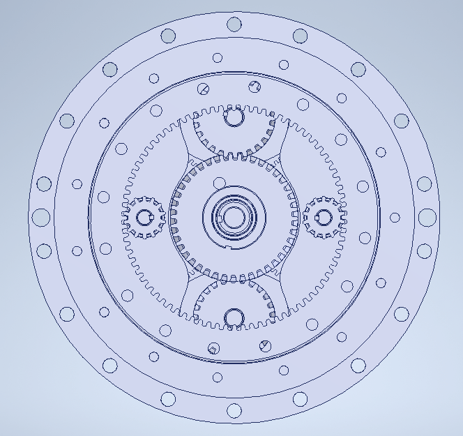
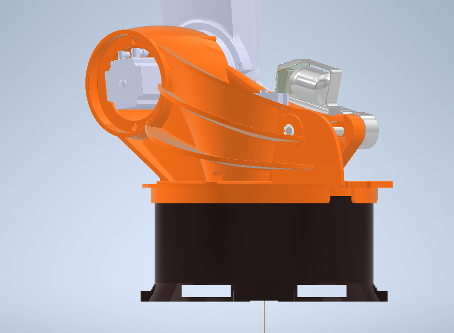
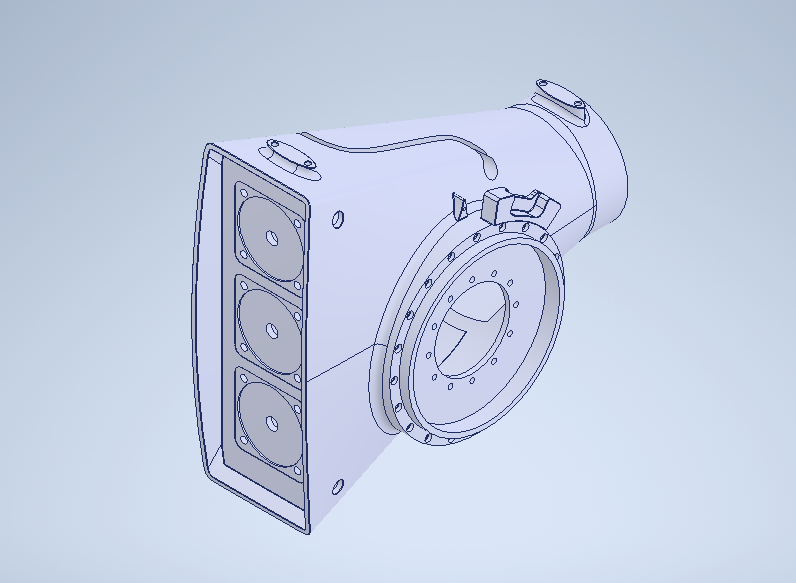
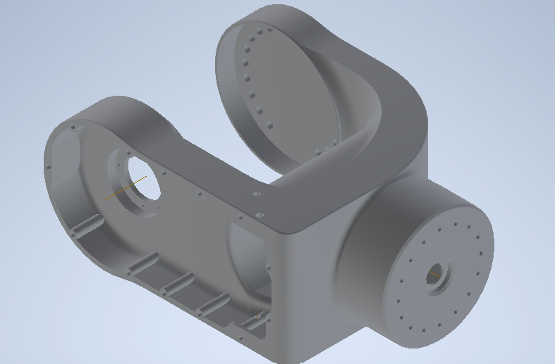
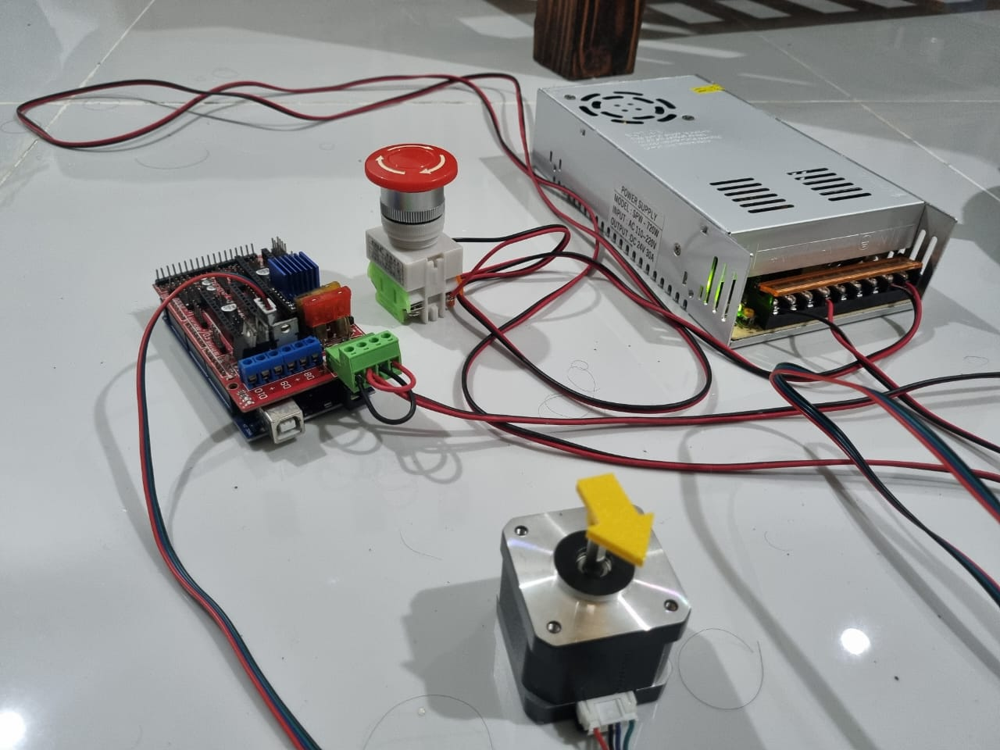
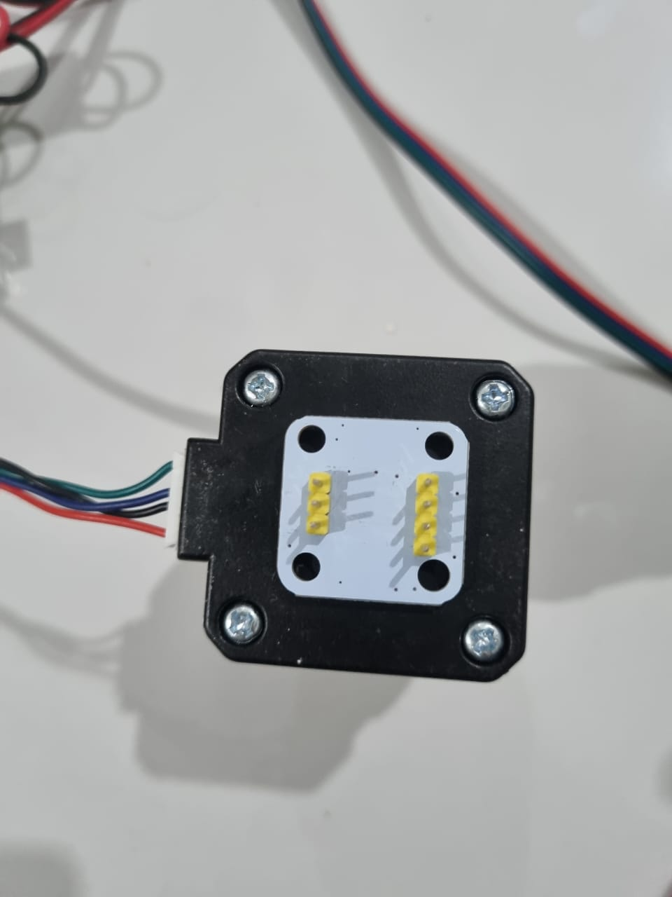
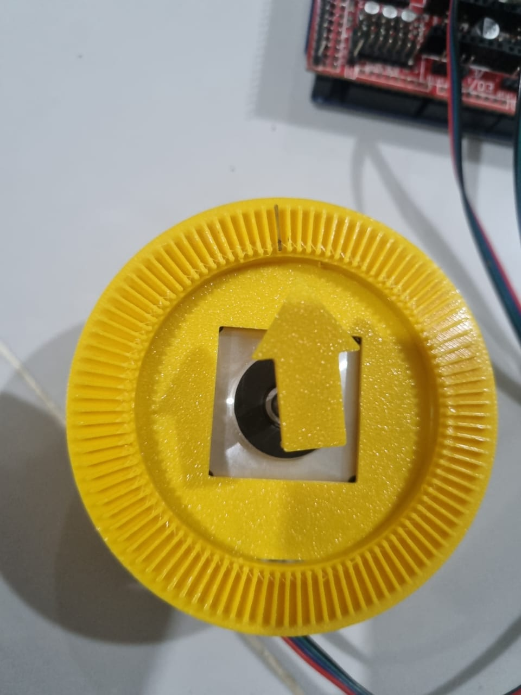

← Back to projects
Robotics · Mechanical Design
6-DOF Industrial Robotic Arm
Mechanical Design & Motion Control Concept
A six-axis articulated robot designed in Autodesk Inventor, with custom joint housings, geared transmissions, base structure, arm links, and wrist assembly. The project also includes early Arduino-based work on actuator control and position feedback.
Engineering Overview
Design
Industrial robot architecture
The arm was designed as a six-axis articulated manipulator, taking general inspiration from the proportions and joint layout used in industrial robots. The geometry itself was modeled separately in Autodesk Inventor.
The assembly is built around the joints rather than just the outer shell. The base, shoulder, elbow, forearm, and wrist contain their own mounting and transmission geometry, so the CAD can be viewed as a mechanical assembly rather than only a styling exercise.

6-Axis Architecture
Joint layout
J1 — Base
Rotation of the complete upper arm around the vertical axis.
J2 — Shoulder
Raises and lowers the primary arm structure.
J3 — Elbow
Changes the effective reach of the manipulator.
J4 — Wrist / Forearm Rotation
Rotates the forearm and wrist assembly.
J5 — Wrist Pitch
Changes the tool orientation through the wrist.
J6 — Tool Rotation
Rotates the final mounting axis.
Mechanical Design
Joint housings and transmissions
The CAD was broken down into individual mechanical sections so the motors, gears, shafts, bearings, and joint interfaces had defined space inside the arm.

Gearbox
Internal reduction stage used to transmit motor rotation to a joint output.
Secondary Gearbox
Alternative geared arrangement used in another rotational axis.
Base Assembly
Lower structure containing the main rotational joint and the first transmission stage.
Elbow
Structural connection between the upper and forearm sections, with internal space reserved for the joint drive.
Wrist Housing
Compact housing for the final wrist axes and actuator mounting.Gear reduction
Several joints use gear reduction between the motor and joint output. The reduction lowers output speed while increasing the available output torque and angular resolution.
Gear ratios were calculated during the CAD development. Motor torque, bearing loads, structural stresses, payload capacity, and transmission efficiency have not yet been fully sized.
Motion Control
Early actuator control work
Stepper Position-Control Study
An Arduino-based stepper setup was built to explore actuator control, variable motion profiles, and position feedback before integrating electronics into the robotic arm.

Motor Control Setup
Arduino-based STEP/DIR test setup with stepper driver, power supply, and emergency stop.
Encoder Feedback
AS5600 encoder mounted to the stepper for shaft-position feedback.
Position Gauge
3D-printed angular reference used to inspect shaft position during testing.Open-loop and feedback positioning study
The control study compared open-loop stepper behavior with encoder-assisted position correction under variable speed and acceleration profiles.
The long-run comparative dataset is simulation-based.
| Revolutions | Error (full steps) |
|---|---|
| 100 | -0.8 |
| 200 | -2.3 |
| 300 | -4.9 |
| 400 | -8.6 |
| 500 | -13.1 |
| 600 | -18.7 |
| 700 | -25.9 |
| 800 | -34.4 |
| 900 | -43.8 |
| 1000 | -54.6 |
| Revolutions | Error (full steps) |
|---|---|
| 100 | -0.2 |
| 200 | -0.3 |
| 300 | 0 |
| 400 | -0.4 |
| 500 | -0.2 |
| 600 | 0 |
| 700 | -0.2 |
| 800 | -0.4 |
| 900 | -0.3 |
| 1000 | 0 |
STEP/DIR Control
Pulse and direction commands generated through Arduino.
Variable Motion
Acceleration, deceleration, and changing motor speed used to study positioning behavior.
Encoder Feedback
AS5600 position sensing used to explore closed-loop correction.
System Integration
Mechanical drive and position control
- Command
- Arduino / Controller
- Motor
- Gear Reduction
- Joint
- Encoder
The mechanical transmission determines how motor rotation reaches the joint. The controller determines the commanded motion, while feedback can be used to check the actual joint position.
Development Status
What is designed, and what is still next
Designed
- 6-DOF articulated-arm layout
- Full CAD assembly
- Base and arm structures
- Elbow and wrist housings
- Internal geared transmissions
- Gear-ratio calculations
- Motor mounting concepts
- Arduino motor-control experiments
- Encoder feedback experiments
Next
- Define payload and reach targets
- Select motors
- Complete joint torque calculations
- Calculate shaft and bearing loads
- Select final materials
- Evaluate gearbox backlash and efficiency
- Define joint limits
- Forward and inverse kinematics
- Structural analysis
- Electronics integration
- Physical prototype
Project Summary
From CAD assembly to a working robot
The current design establishes the mechanical layout of the six-axis arm and the main drivetrain concepts inside each joint. The CAD work is far enough along to show how the complete assembly fits together, while the remaining work is mainly engineering validation and control integration.
The next stage is to turn the concept into a properly sized machine: define the target payload, calculate joint loads, select motors and bearings, develop the kinematics, and build a physical prototype.